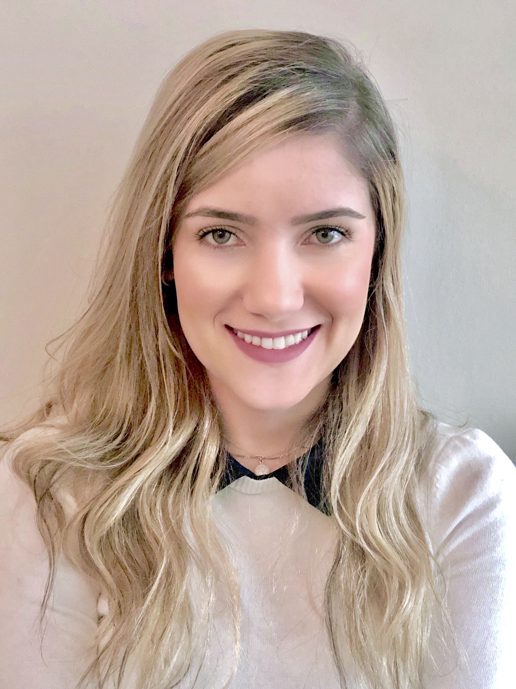

My project
One of many that are yet to come

front-end dev (in process..)
Working in a fast paced environment I was able to work under pressure, develop my organization skills to contribute to the planning and development of the projects. Created project budgets by estimating material prices. Monitored project progress and wrote reports weekly for the project manager and clients and also met with clients, contractors, and stakeholders on construction sites to present project improvement and answer potential questions.
I provided administrative support to teachers and the director, such as greeting the students upon arrival, providing information regarding products or services available, preparing contracts, processing cash transactions, registration of the teachers and students’ schedule, data entry using the company system database. This experience equipped me with multitask skills and taking initiative in solving problems.
Working in retail stores I was able handle stressful situations focusing customer satisfaction by answering their needs and concerns with a positive attitude and solution with a focused spirit. Greeting all customers in a friendly manner and offering them assistance by providing products’ information and location, issued receipts, refunds, and gift cards by following company policies and customers’ preferences was some task that I have to perform.
Civil Managment engineer and future Developer
My name is Naiara Lopes and I’m from Brazil. I decided to study Civil Management Engineering because since I was a kid I was amazed by building and creating new things.
When I was at the university I worked full time as administrative assistant and later on as an assistant project manager, it was definitely a challenge for me to work full time and attend the classes at night but all the effort was worth it because it equipped me with a valuable knowlogde.
I also got married while I was in the university, and the dream of living in Canada grew even more. My husband found a job in Winnipeg to work at SkipTheDishes as a software developer and we came right after my graduation.
In Winnipeg I was able to find a job in retail and improve my English skills. Besides all the friends that we made in Winnipeg and the opportunities which were open to us there, we got in love with Calgary and its beautiful mountains which reminds us of our hometown.
Right after I moved to Calgary I decided to face the challenge of changing careers and engaging in the IT world and I’m very excited about this new journey.
One of many that are yet to come